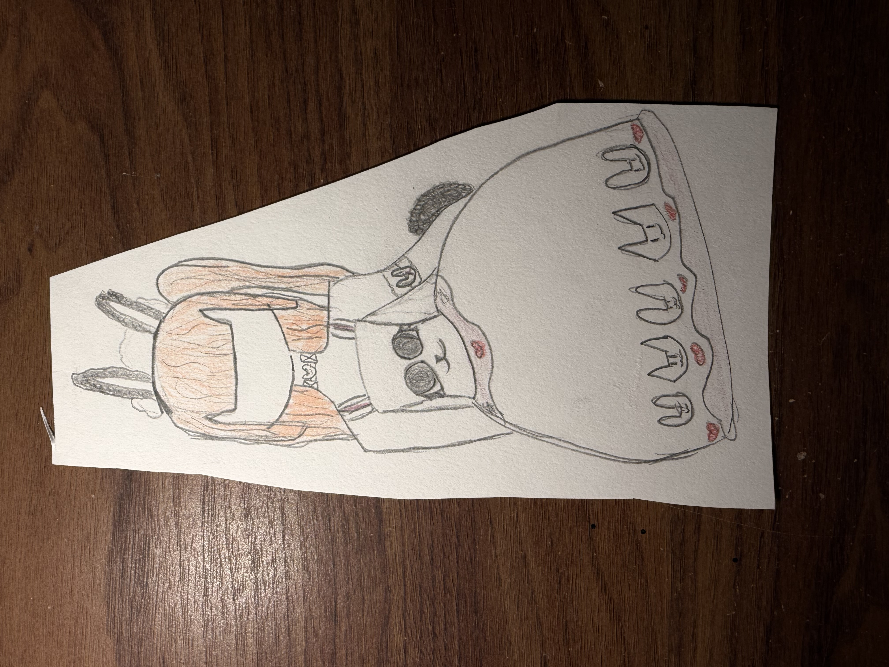
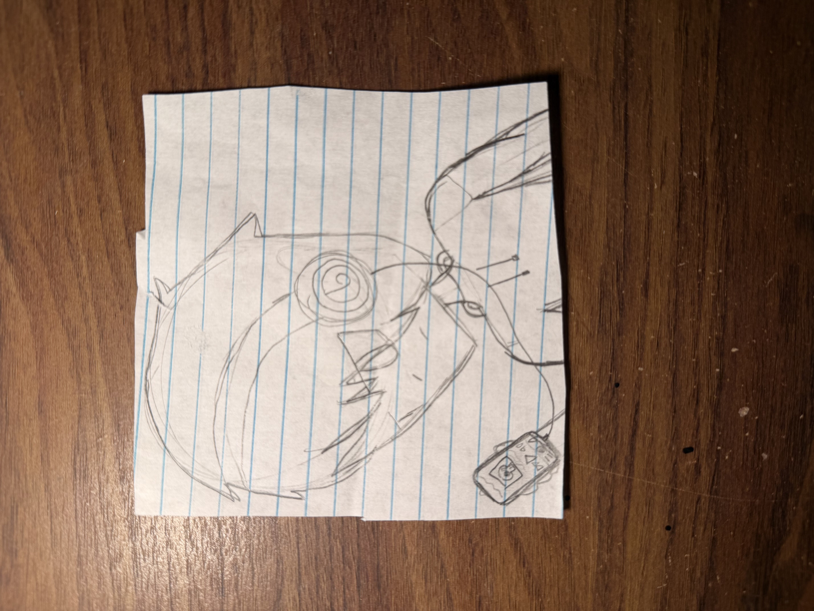
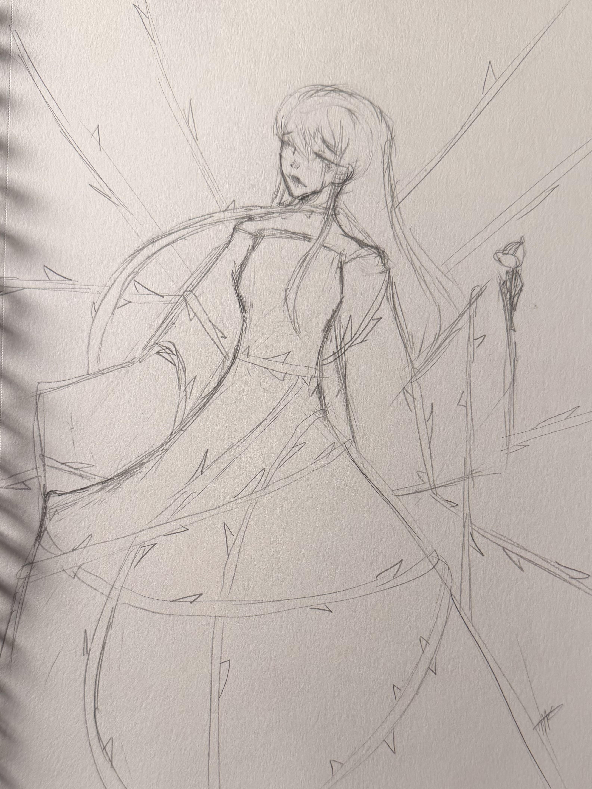
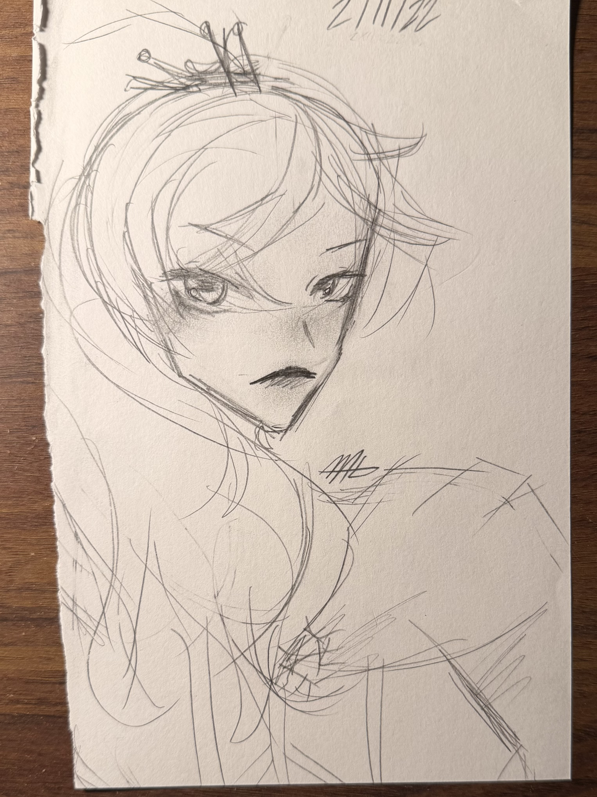
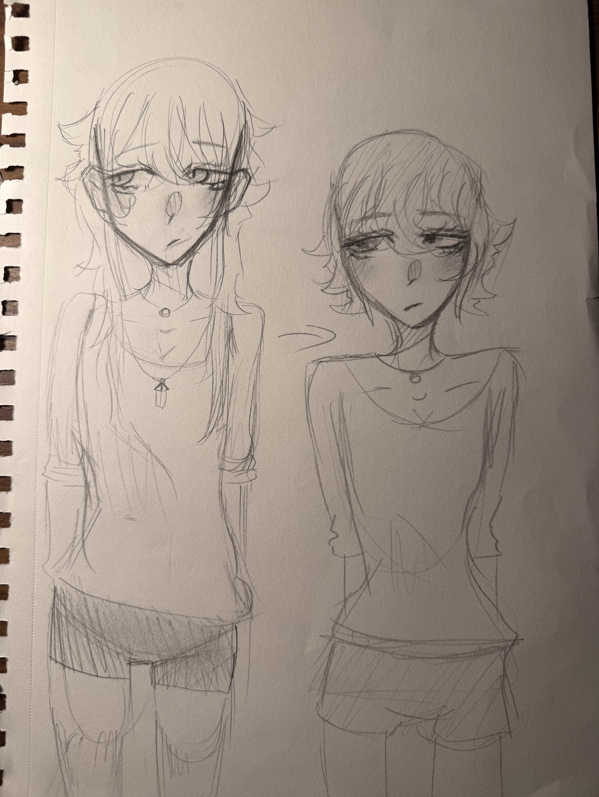
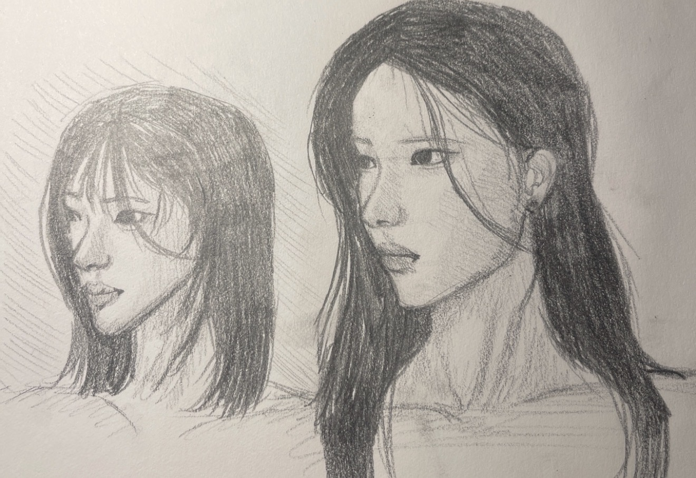
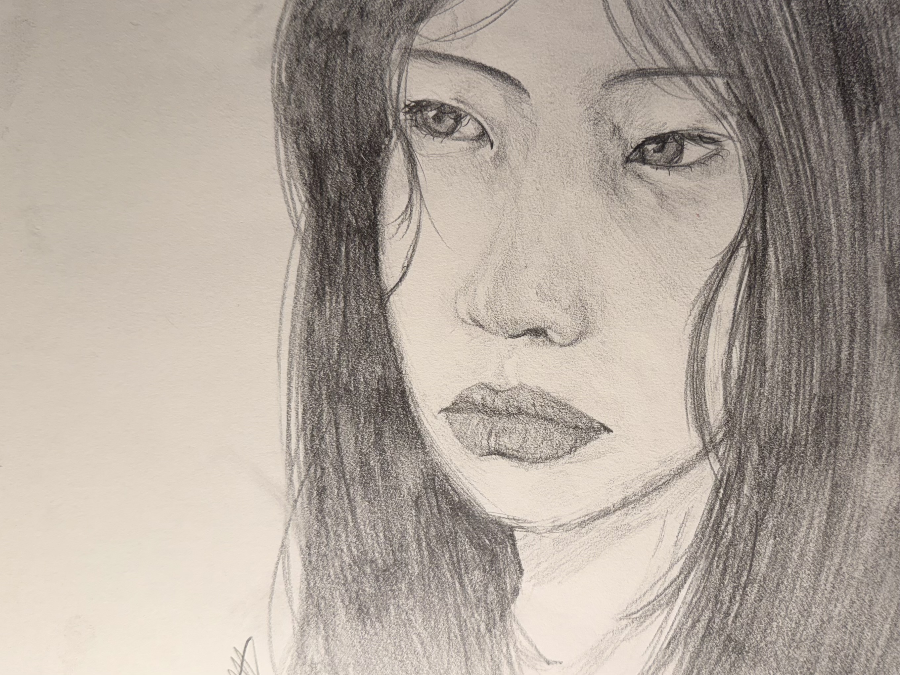

My Art Journey
2019
This was the year that I finally saw myself as someone who "did art". Whether it was in class or at home I always was drawing, This was the time that I didn't care if i was good or bad. All I wanted to do was have fun!

2020
During the year of the lockdown I didn't find myself drawing often, I would only start to draw a lot again when they finally let us back into school.

2021
This was the year where I binged watched countless shows, a lot of these shows are ones that I continue to draw the characters to this day. Within this year I was able to look at other peoples art and figure out how they did it.

2022
This year is the one that I finally tried to build up my own style, by starting a new instagram I opened myself up to wanting to build a brand. After a while I found a way I liked to draw eyes and came to a style that built up a muscle memory.

2023
This is a year where my art was stable, and i has a huge boost of creativity with my instagram getting more and more attention. In this year I drew plenty of things, but by the end of 2023 I chose to shake things up a bit.

2024
This year is the one where my art actually got good (no offense to past Ava). However, even though I was sticking with a majorly cartoonish style, I started building up my skills with realism. Leaning more into detail, definition, and stylization.

2025
This is the year where I turly felt confident and started to love my art. By studying a lot of form and proportion I was able to copy a lot of the things i saw around me.
